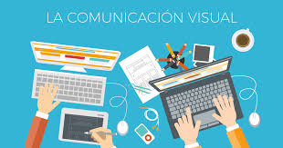

Estudiar una Carrera Universitaria
Estudiar en Cba
Opciones de carreras
Comunicacion Visual, Diseño Grafico, Marketing
Comunicacion Visual
Que es la carrera?
Esta carrera forma al profesional que aplica procedimientos y técnicas para investigar, producir y difundir mensajes visuales y audiovisuales que sirvan, no sólo para informar a los distintos sectores de la sociedad, sino para apoyar sus necesidades e impulsar su desarrollo.
Que se hace?
La comunicación visual consiste en utilizar elementos visuales para transmitir información o ideas. Después de todo, una imagen vale más que mil palabras. Comunicar un mensaje de forma clara y concisa usando solo palabras puede ser difícil.

Mas Info
Diseñador Grafico
Que es la carrera?
La carrera de Diseño Gráfico es una disciplina que combina creatividad, tecnología y comunicación visual. Se encarga de crear mensajes visuales para transmitir ideas o conceptos.
Que hace?
Un diseñador gráfico es un profesional que crea imágenes y composiciones visuales para comunicar ideas y mensajes. Utiliza herramientas digitales o manuales para transmitir conceptos a través de dibujos, bocetos, folletos, libros, entre otros.
Mas Info
Marketing
Que es la carrera?
La carrera de marketing digital se enfoca en la digitalización de un negocio, su presencia en línea, y en la promoción de productos y servicios.
Mas Info
Duracion de la carrera
Marketing digital puede variar entre 2 y 4 años, dependiendo del tipo de formación.
Volver al Inicio